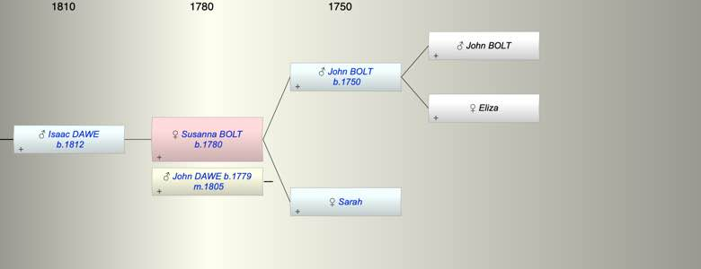

| [Index] |
| Susanna BOLT (1780 - ) |
|  |
| b. abt 1780 |
| m. 25 Feb 1805 John DAWE (1779 - ) at Oakhampton |
| Near Relatives of Susanna BOLT (1780 - ) | ||||||
| Relationship | Person | Born | Birth Place | Died | Death Place | Age |
| Grandfather | John BOLT | |||||
| Grandmother | Eliza | |||||
| Father in Law | Joseph DAWE | |||||
| Mother in Law | Susanna | |||||
| Father | John BOLT | 1750 | ||||
| Mother | Sarah | |||||
| Self | Susanna BOLT | abt 1780 | ||||
| Husband | John DAWE | abt 1779 | Oakhampton | |||
| Son | Isaac DAWE | 1812 | SIlverton | |||
| Daughter in Law | Mary BREWER | 1817 | Exminster | 31 Dec 1861 | 44 | |
| Granddaughter | Mary DAWE | |||||
| Grandson | Thomas DAWE | 1842 | Exeter | |||
| Grandson | John DAWE | 1844 | Exeter | |||
| Grandson | Henry DAWE | 1846 | Exeter | |||
| Grandson | Frank DAWE | 1848 | Exeter | |||
| Granddaughter | Susan DAWE | 1850 | Broadclyst | |||
| Granddaughter | Isaac DAWE | 1853 | Broadcylst | |||
| Granddaughter | Anne DAWE | 1854 | Broadclyst | |||
| Events in Susanna BOLT (1780 - )'s life | |||||
| Date | Age | Event | Place | Notes | Src |
| abt 1780 | Susanna BOLT was born | Note 1 | |||
| 25 Feb 1805 | 25 | Married John DAWE (aged 26) | Oakhampton | ex FSearch | |
| 1812 | 32 | Birth of son Isaac DAWE | SIlverton | Note 2 | |
| Note 1: baptised Hatherleigh 6 May 1781 a strong possibilty |
| Note 2: ex 1851 census 1861 Oakhampton baptised 2 Feb 1812 Oakhampton son of John and |
| Created on a Mac™ using iFamily for Mac™ on 15 Sep 2023 |